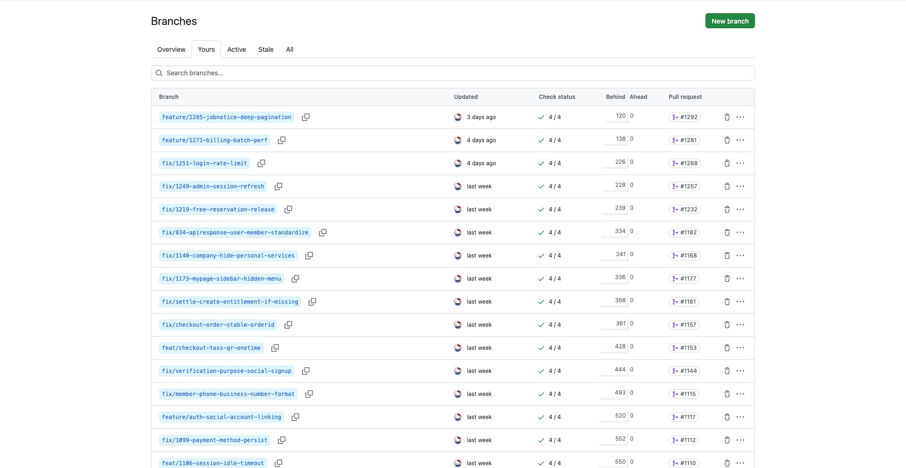
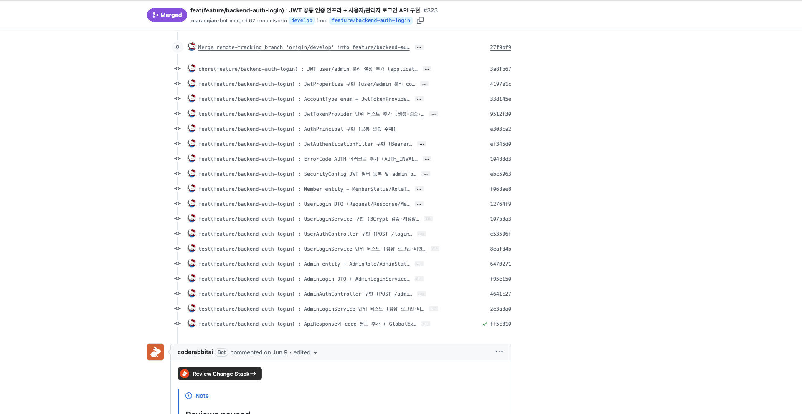
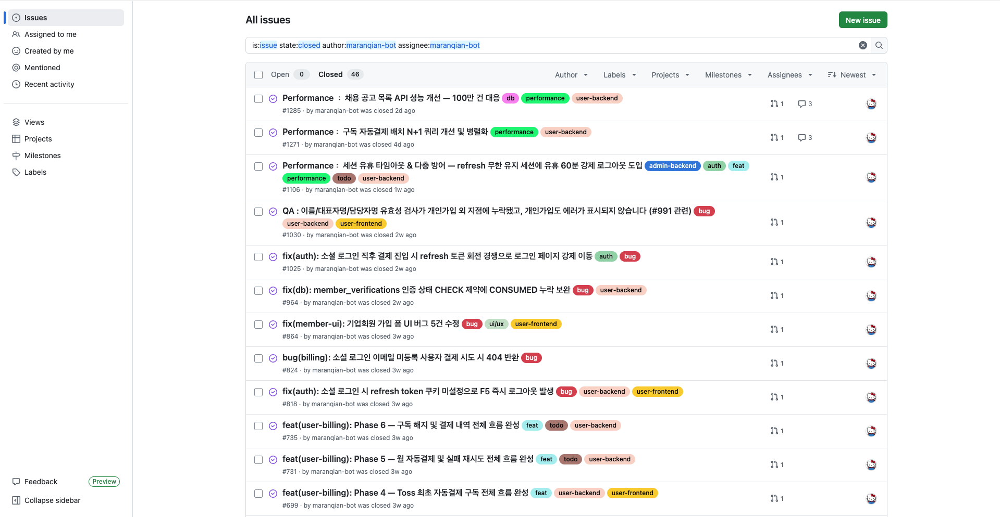
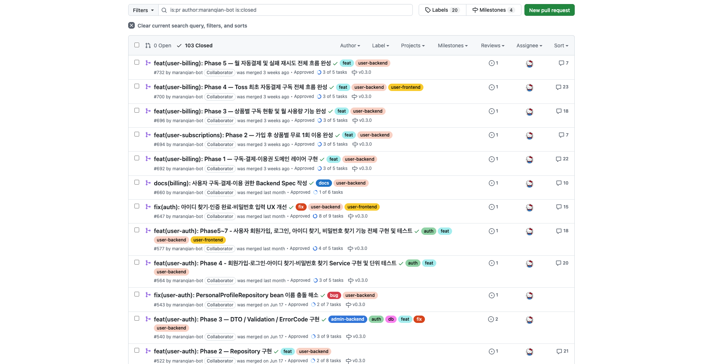
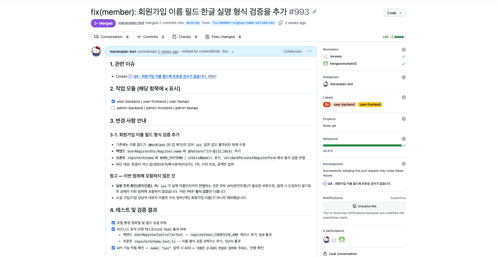
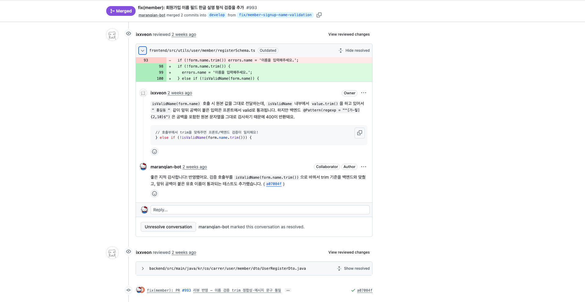
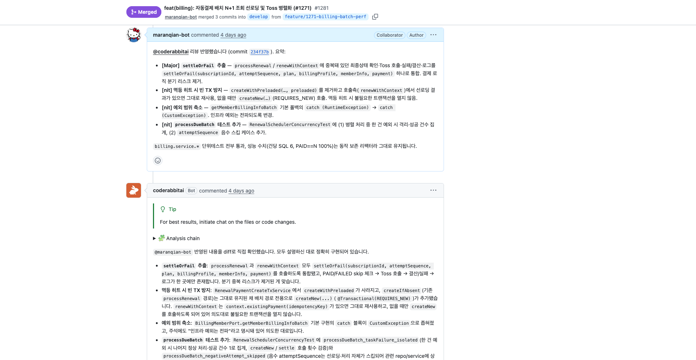

Collaboration
팀과 함께 일하는 방식
프로젝트를 진행하며 팀과 함께 지킨 협업 기준입니다. 스펙 주도 개발을 바탕으로 브랜치 전략, 커밋 컨벤션, 이슈 관리, PR·코드리뷰 절차를 팀과 맞추고 일관되게 운영했습니다.
작업 흐름
기능을 바로 구현하기보다, 요구사항과 스펙을 먼저 확인하고 작업 범위를 합의한 뒤 구현에 들어가는 순서로 일했습니다.
1
이슈 · 요구사항 확인
구현할 기능, 버그, 개선 사항을 먼저 이슈로 정리했습니다.
2
Spec 문서 확인 · 작성
관련 스펙을 확인하고, 없으면 spec · plan · tasks 순서로 작성했습니다.
3
구현 범위 합의
구현 계획과 작업 범위를 팀과 맞춘 뒤 시작했습니다.
4
브랜치 생성
최신 develop 기준으로 기능 단위 브랜치를 만들었습니다.
5
구현 및 검증
기존 코드 스타일·구조를 따르며 구현하고, 테스트로 검증했습니다.
6
Pull Request 생성
하나의 목적에 집중된 PR을 열고 변경 의도를 정리했습니다.
7
리뷰 반영 후 병합
리뷰 코멘트를 반영하고 스레드를 정리한 뒤 병합했습니다.
브랜치 전략
항상 최신 develop에서 분기하고, 작업 내용이 드러나도록 브랜치명을 지었습니다. 하나의 브랜치에는 하나의 목적만 담았습니다.
브랜치 네이밍
feature/{작업명}
fix/{작업명}
refactor/{작업명}
docs/{작업명}
chore/{작업명}
지킨 규칙
- 진행 중인 작업 브랜치 위에서 새 브랜치를 만들지 않았습니다.
- 브랜치를 잘못 만들면 변경사항을 보존한 뒤
develop 기준으로 다시 만들었습니다.
- 순차 의존 피처는 머지 순서와 의존 브랜치를 PR 본문에 명시했습니다.

📷브랜치 목록 스크린샷GitHub 저장소 → Branches 탭(또는 Insights → Network 그래프)을 캡처. 컨벤션에 맞춘 feature/·fix/ 브랜치들이 보이도록.assets/collab/branches.png
실제 브랜치 목록 — 컨벤션에 맞춘 기능 단위 브랜치명
커밋 컨벤션
커밋 메시지만 봐도 변경 의도가 드러나도록 {type}({branch-name}) : {summary} 형식을 지켰고, 리뷰 가능한 단위로 커밋을 나눴습니다.
| Type | 의미 |
|---|
feat | 기능 추가 |
fix | 버그 수정 |
refactor | 리팩토링 |
style | 코드 포맷 또는 스타일 변경 |
design | UI/UX 변경 |
chore | 기타 설정 또는 문서 작업 |
rename | 파일 또는 이름 변경 |
remove | 삭제 |
build | 빌드 설정 변경 |
# 예시
feat(feature/user-login-api) : 회원 로그인 API 추가
fix(fix/payment-status-validation) : 결제 상태 검증 오류 수정

📷커밋 히스토리 스크린샷GitHub → Commits 목록을 캡처. {type}({branch}) : {summary} 형식이 실제로 지켜진 커밋들이 보이도록.assets/collab/commits.png
실제 커밋 히스토리 — 컨벤션 형식을 지킨 커밋 메시지
이슈 관리
구현할 기능, 버그, 개선 사항을 이슈 단위로 나누고 진행 상태와 완료 기준을 남겨, 작업 흐름이 팀 안에서 보이도록 정리했습니다.
이슈로 나눈 기준
기능, 버그, 개선 사항을 각각의 이슈로 분리해 작업 단위를 명확히 했습니다.
남긴 기록
진행 상태와 완료 기준을 이슈에 남겨, 무엇을 어디까지 했는지 드러나게 했습니다.

📷이슈 목록 스크린샷GitHub → Issues 탭을 캡처. 기능·버그·개선이 이슈 단위로 분리되고 라벨·상태가 보이도록. (이슈 하나의 상세 화면을 추가로 넣어도 좋아요.)assets/collab/issues.png
실제 이슈 목록 — 기능·버그·개선 단위 분리 및 진행 상태 기록
Pull Request
PR은 항상 develop을 대상으로 열었고, 팀 템플릿에 맞춰 관련 이슈·작업 모듈·변경 사항·검증 결과·리뷰어 전달 사항을 남겼습니다. PR을 열기 전 아래 항목을 스스로 점검했습니다.
✓작업 브랜치가 develop에서 분기되었는가 (순차 의존 시 머지 순서·의존 브랜치 명시)
✓PR 범위가 하나의 목적에 집중되어 있는가
✓관련 없는 파일 변경이 제외되었는가
✓Spec 또는 Convention과 충돌하지 않는가
✓필요한 테스트 또는 빌드 확인을 수행했는가
✓리뷰어가 확인해야 할 사항을 PR 본문에 남겼는가

📷PR 목록 스크린샷GitHub → Pull requests 탭 전체 목록. 하나의 목적에 집중된 PR들이 쌓인 모습이 보이도록.assets/collab/pr-list.png
실제 PR 목록 — 한 PR에 하나의 목적

📷PR 본문 스크린샷PR 하나를 열어 템플릿(관련 이슈·작업 모듈·변경 사항·검증 결과)이 작성된 본문을 캡처.assets/collab/pr-detail.png
실제 PR 본문 — 팀 템플릿에 맞춘 작성
코드리뷰 반영
구현 결과만 공유하지 않고, 리뷰 코멘트와 수정 내역을 함께 남겨 팀 안에서 개선한 과정을 기록했습니다.
리뷰 처리 원칙
- 모든 코멘트를 반영·보류·반려 중 하나로 명확히 처리했습니다.
- 반영하지 않을 때는 이유를 코멘트로 남겼습니다.
- 반영 커밋을 기존 PR 브랜치에 추가하고 스레드를 resolved 처리했습니다.
AI · 자동 리뷰
- CodeRabbit 등 자동 리뷰도 유효한 지적이면 반영했습니다.
- 단순 스타일 경고도 팀 규칙과 충돌하지 않으면 가능한 한 정리했습니다.
- 현재 코드와 맞지 않는 지적은 근거를 남기고 스킵했습니다.

📷코드리뷰 코멘트 스크린샷PR 대화(Conversation)의 실제 리뷰 코멘트 + 반영 커밋 / Resolved 처리된 스레드를 캡처.assets/collab/review.png
실제 리뷰 코멘트와 반영·해결 과정

📷AI 자동 리뷰 스크린샷CodeRabbit 등 자동 리뷰가 남긴 코멘트와, 그에 대한 반영/스킵 근거가 보이도록 캡처.assets/collab/coderabbit.png
CodeRabbit 자동 리뷰 반영
테스트 & 검증
각 스택별로 아래 명령으로 검증한 뒤 PR에 결과를 남겼습니다. 문서만 수정한 경우에는 생략 사유를 함께 적었습니다.
# Backend
cd backend && ./gradlew test
# Frontend
cd frontend && npm run build
# FastAPI
cd fastapi && python -m pytest